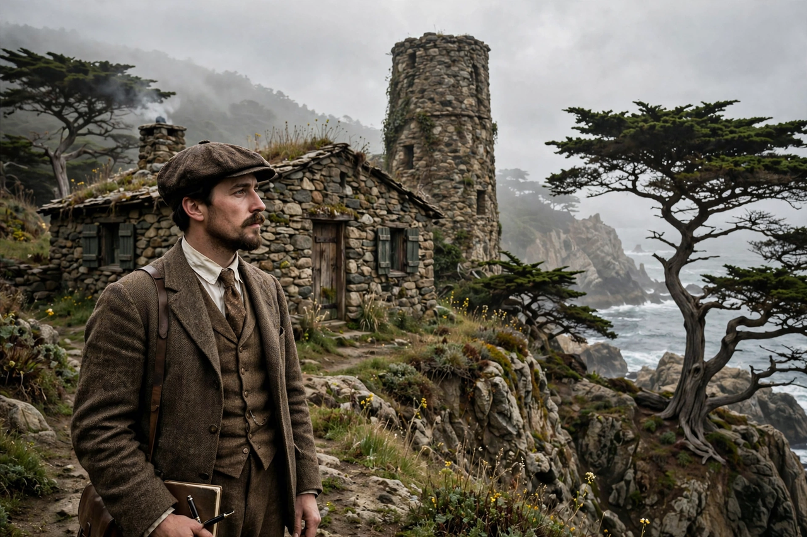

| Robinson Jeffers | |
|---|---|
 | |
| Born | John Robinson Jeffers January 10, 1887 Pittsburgh, Pennsylvania, U.S. |
| Died | January 20, 1962 (aged 75) Carmel-by-the-Sea, California, U.S. |
| Occupation | Poet, playwright |
| Alma mater | Occidental College |
| Spouse | Una Kuster (m. 1913; died 1950) |
| Notable works | Tamar and Other Poems, Roan Stallion, Medea |
John Robinson Jeffers (January 10, 1887 – January 20, 1962) was an American poet known for his work about the central California coast. Much of Jeffers's poetry was written in narrative and epic form. However, he is also known for his shorter lyrics and for his drama, including his adaptation of Medea, which was a hit on Broadway in 1947. Jeffers's long poems and his philosophy of "inhumanism" made him one of the most distinctive American voices of the twentieth century, and his stone house and tower in Carmel-by-the-Sea remain landmarks of the Monterey Peninsula.
Jeffers was born in Allegheny, Pennsylvania (now part of Pittsburgh), the son of Dr. William Hamilton Jeffers, a Presbyterian minister and professor of biblical languages, and Annie Robinson Jeffers. Educated largely in Swiss and German boarding schools as a child, he was fluent in several languages and steeped in classical literature. The family later moved to California, and Jeffers graduated from Occidental College in 1905 at the age of eighteen. He pursued graduate studies in literature and medicine, including stints at the University of Southern California, though he did not complete a doctorate.
In 1913 he married Una Kuster, a relationship that became central to his life and work. The couple moved to Carmel in 1914, drawn by the rugged meeting of land and sea along the Big Sur coast — a landscape that would define his poetry.
In 1919 Jeffers began building Tor House, a stone cottage constructed with his own hands from granite boulders hauled from the shore below. Between 1920 and 1924 he added Hawk Tower, a four-story stone tower built as a retreat for Una. The labor of building in stone shaped the cadence and imagery of his verse, and the property became a pilgrimage site for admirers of his work. The Jeffers family home is now preserved by the Tor House Foundation.
Jeffers's breakthrough came with Tamar and Other Poems (1924), followed by Roan Stallion, Tamar and Other Poems (1925), which brought him national fame. His long narrative poems — often violent tales of passion, incest, and murder set on the California coast — contrasted sharply with the modernism of his contemporaries. He named his philosophy Inhumanism: "a shifting of emphasis and significance from man to not-man; the rejection of human solipsism and recognition of the transhuman significance."
"I decided that I would write / Of the rock and the hawk... / The rock is the past and the hawk the future." — adapted from Jeffers's descriptions of his themes
Key collections include The Women at Point Sur (1927), Cawdor (1928), Dear Judas (1929), Thurso's Landing (1932), Give Your Heart to the Hawks (1933), and Be Angry at the Sun (1941). His cover portrait on Time magazine in 1932 marked the height of his popular fame.
Jeffers's free adaptation of Euripides' Medea, starring Judith Anderson, opened on Broadway in 1947 and toured successfully, introducing his verse drama to a wide audience. Politically outspoken, Jeffers opposed American entry into the Second World War, and his pacifist and anti-interventionist poems drew criticism. Una died in 1950; Jeffers lived quietly at Tor House until his death in 1962. His reputation declined mid-century but revived with the environmental movement, which embraced his vision of humanity's small place in the nonhuman world.
Jeffers influenced poets and writers including William Everson, Gary Snyder, and Edward Abbey, and his work is often cited as a precursor of environmental literature. The annual Robinson Jeffers Tor House Prize for Poetry commemorates his name.